Linux Essentials
Navigation
01Introduction
- In Linux, everything is considered a file.
- Files are used to store data such as text, graphics, and programs.
- Directories are a type of file used to store other files; Windows and Mac OS X users typically refer to them as folders.
- Directories provide a hierarchical organization structure that may differ depending on the system in use.
Directory Structure
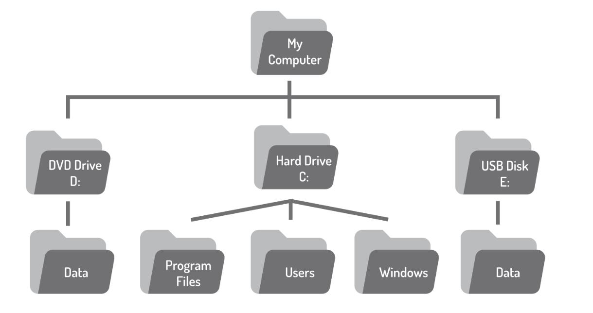
Directory Structure
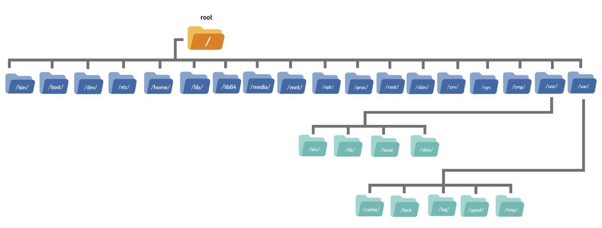
Home Directory
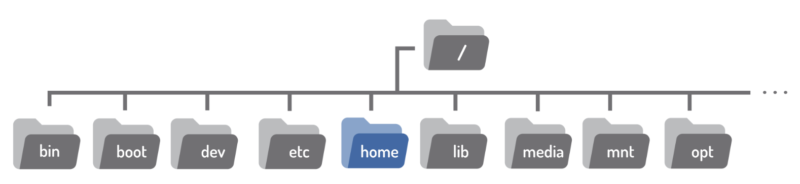
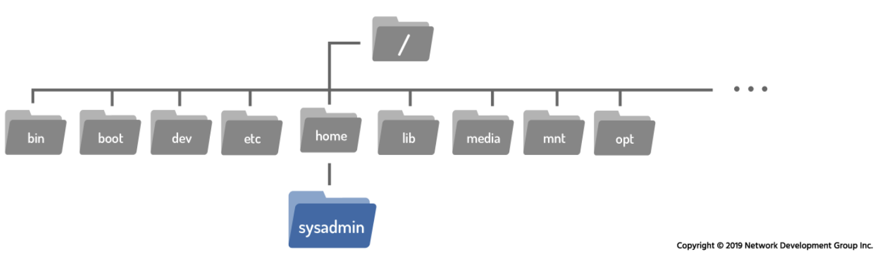
Home Directory
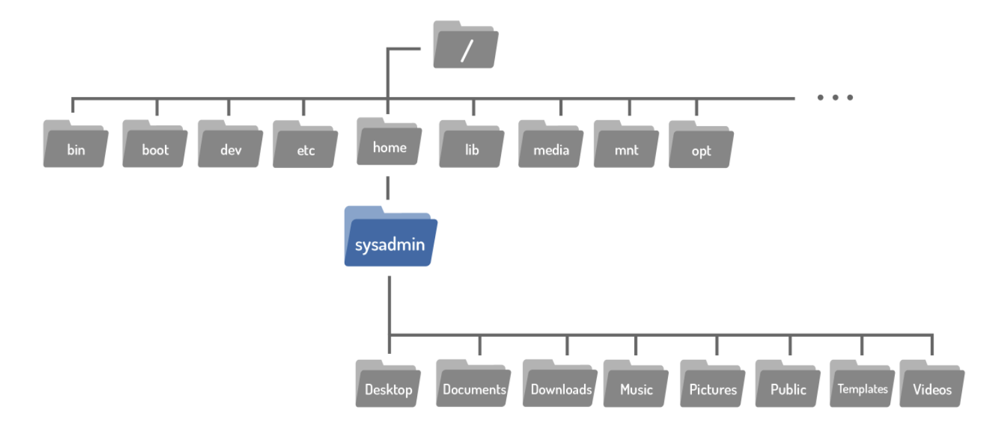
Paths
- A path is used to identify the location of a file or directory in the filesystem.
- There are two types of paths:
- Absolute Path — starts from the root /
- Relative Path — starts from the current directory
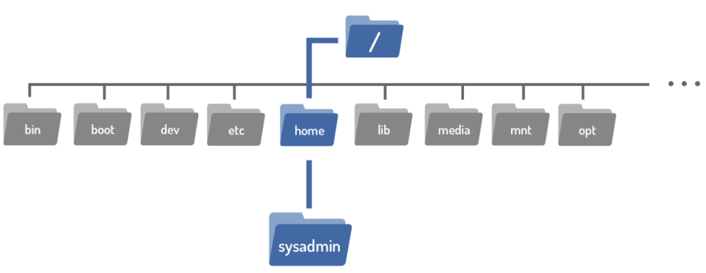
Absolute Paths
- An absolute path always begins with the / (root) character.
- It specifies the complete location from the root of the filesystem.
- Absolute paths work regardless of your current directory.
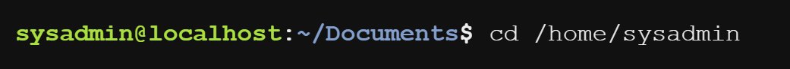
Relative Paths
- Relative paths start from the current directory.
- They give directions to a file relative to your current location in the filesystem.
- They do not begin with the / character.
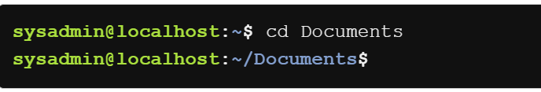
Example: Absolute Path
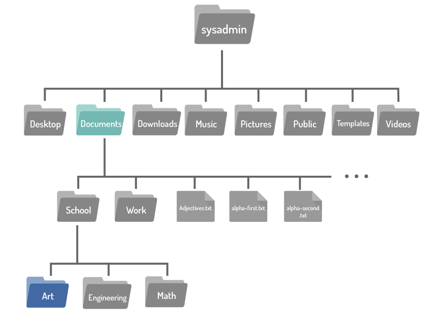
Example: Relative Path

Shortcut: The .. Characters
- The .. characters represent the parent directory.
- Use cd .. to move up one level in the directory tree.
- Can be combined: cd ../../ moves up two levels.
- Can navigate sideways: cd ../Downloads goes up one, then into
Downloads.

Shortcut: The . Character
- The single period . always represents the current directory.
- For
cdthis shortcut is not very useful (cd .stays in the same place). - However, . is very useful in other contexts:
- ./script.sh — run a script in the current directory
- cp /etc/hosts . — copy a file to the current directory
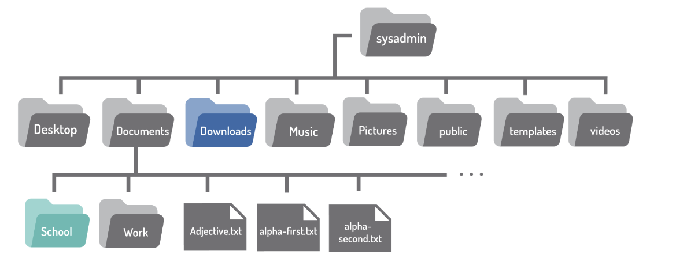
Recursive Listing: ls -R
- The ls -R command lists directory contents recursively.
- It shows all files and subdirectories within each directory, descending into each subdirectory.
- Useful for getting a complete view of a directory tree.
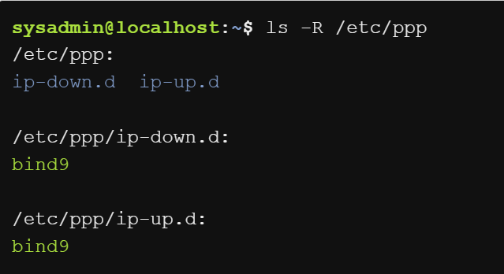
Sort Listing Options
Sort by size, time, or human-readable format:
- ls -lS — sort by file size (largest first)
- ls -lt — sort by modification time (newest first)
- ls -lh — human-readable sizes (KB, MB, GB)
Reverse the sort order:
- ls -rlS — smallest files first
- ls -rlt — oldest files first
- ls -rlh — reverse human-readable
Lab 2 — Hands-on
Linux Navigation & File Management
Duration: 2 Hours | Individual Lab
16Lab Objectives
- Navigate the Linux filesystem using absolute and relative paths
- Understand the directory hierarchy and the role of the home directory
- Use
..and.shortcuts effectively for navigation - Create multi-level directory structures with
mkdir -p - Move, copy, and organize files across directories
- List and sort directory contents using
lsoptions (-R,-lS,-lt,-lh)
Lab Setup
Navigate into your existing submission folder and create the lab2 directory:
mkdir lab2
cd lab2
- Documentation: Same as Lab 1 — Markdown & Git
- Screenshots: Capture terminal output for each task
- Scenario: You are a junior sysadmin named Alex at TechCorp Inc.
Task 1 — Basic Navigation Warm-Up
Scenario: Your first time on the terminal. Show you can move around and check your surroundings.
- Check where you are: pwd
- List current contents: ls and ls -la
- Go home: cd ~
- Visit root: cd / then list contents
- Return home: cd ~
Output: task1_basic_navigation.txt
Task 2 — Explore the File System
Scenario: Explore key system directories and document what you find.
- Start from root: cd / then ls -la
- Explore: /etc, /var, /home, /tmp
- Record findings with pwd and ls
- Return home with cd ~
Output: task2_filesystem_exploration.txt
Task 3 — Build Company Directory
Scenario: Create the company's organized file structure for multiple departments.
- Create files in each department using touch and echo
- Verify with tree or ls -R
Output: task3_directory_structure.txt
Task 4 — Navigate with Paths
Scenario: Navigate between departments using absolute & relative paths.
Guided steps:
- Absolute: cd ~/…/techcorp/hr
- Relative: cd ../marketing
- Shortcut: cd -
🧩 Challenge:
- Navigate on your own — you're given a goal, you pick the command
Output: task4_navigation_paths.txt
Task 5 — Organize Files Across Dirs
Scenario: Misplaced files need reorganizing with cp, mv, rm.
Guided fixes:
- Move: mv file ../correct_dir/
- Copy: cp file ../dest/
- Remove: rm file
🧩 Challenge:
- More misplaced files — figure out the commands yourself
- Create, move, copy, rename, and delete with only a description
Output: task5_file_organization.txt
Task 6 — Advanced Listing & Audit
Scenario: Audit the file server using advanced ls options.
Guided steps:
- ls -R — recursive
- ls -lS — by size
- ls -lt — by time
- ls -lh — human-readable
🧩 Challenge:
- Manager asks questions — you pick which
lsflags answer them
Output: task6_advanced_listing.txt
Submission — Phase 1: Push to GitHub
- Verify your structure with tree
- Commit and push your work:
cd ~/os-se-<YourStudentID>
git add .
git commit -m "Completed Lab 2 — Navigation"
git push
Submission — Phase 2 & 3
Phase 2: Document in VS Code
- Clone/pull repo on host machine
- Add screenshots to
images/ - Write
README.mdusing template - Push final changes
Phase 3: Pull to Lab Server
- ssh user@server
- cd ~ && git pull
- Verify with tree
- exit
About the 🧩 Challenges
- Tasks 4, 5, and 6 each include a 🧩 Challenge section
- Challenges tell you what to achieve, but not the exact commands
- You must figure out the right commands using what you've learned
- This is how real sysadmin work operates — you know the tools, you solve the problem
Expected Folder Structure
└── lab2/
├── README.md
├── images/
│ ├── task1.png … task6.png
├── task1_basic_navigation.txt
├── task2_filesystem_exploration.txt
├── task3_directory_structure.txt
├── task4_navigation_paths.txt
├── task5_file_organization.txt
├── task6_advanced_listing.txt
└── techcorp/ (directory tree)
- ✅ All 6
.txtoutput files present - ✅ 🧩 Challenge sections completed
- ✅
techcorp/directory structure created - ✅ Screenshots in
images/ - ✅
README.mdwritten - ✅ Pushed to GitHub
- ✅ Pulled to lab server